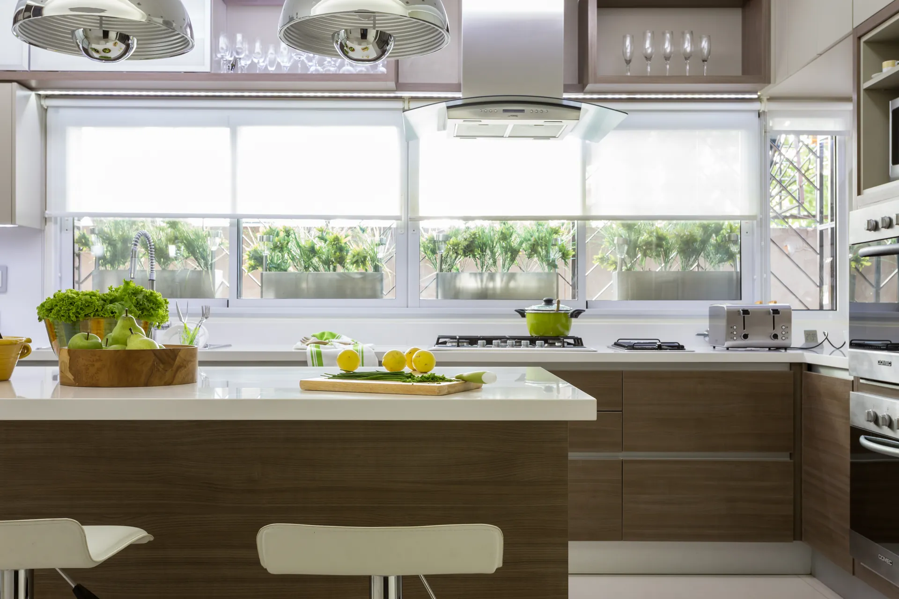
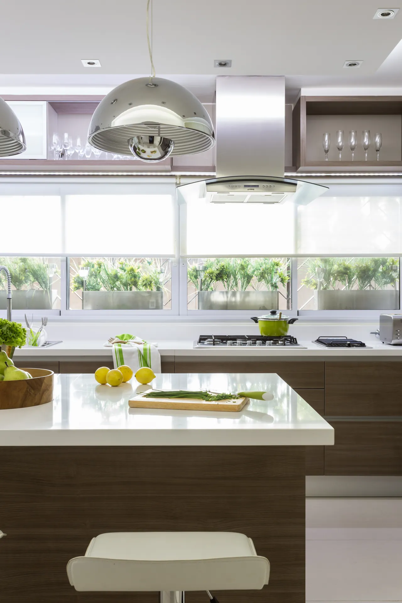
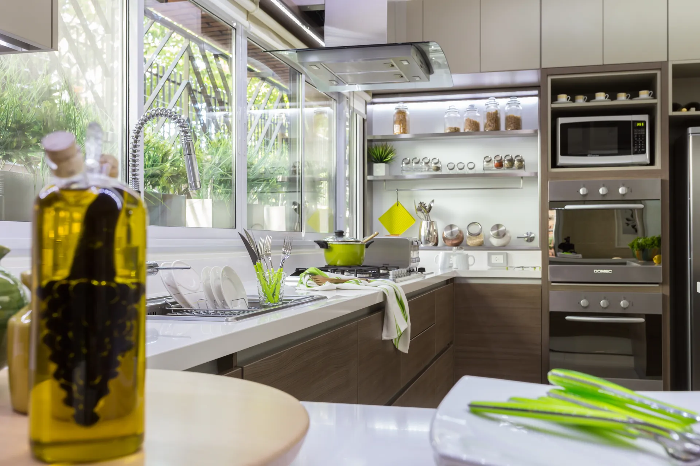
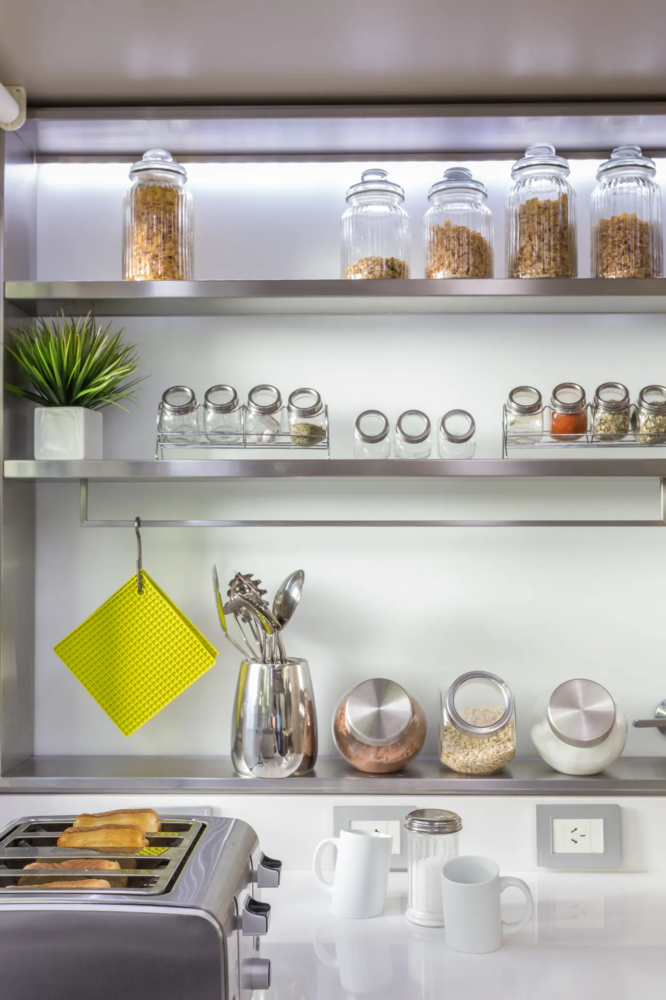
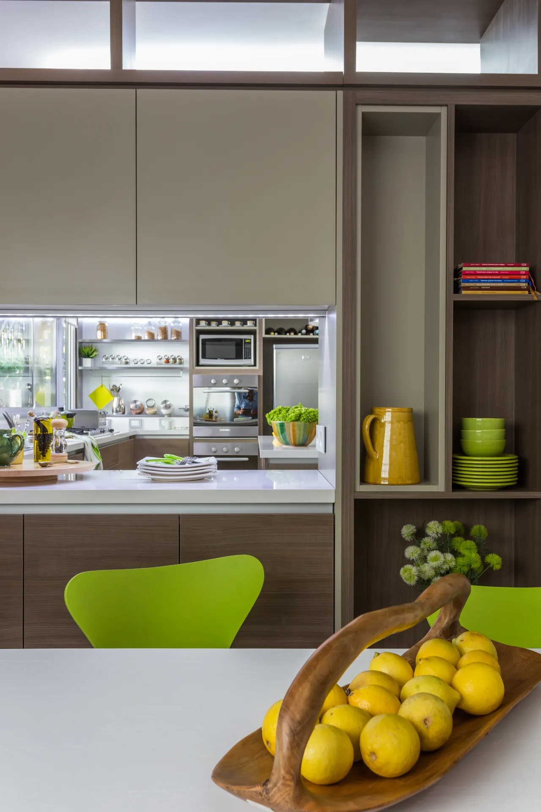
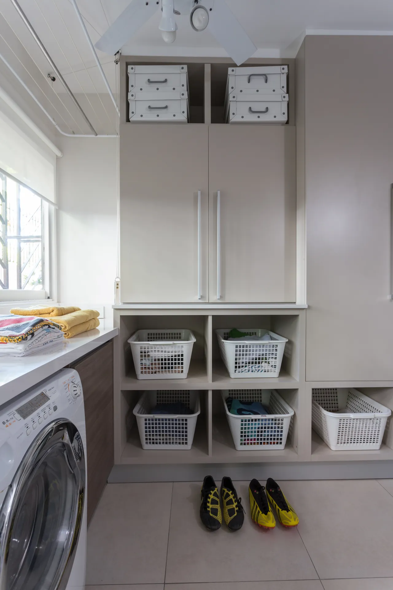

Máxima funcionalidad para una familia con mucha actividad
La dueña de casa pidió una renovación completa. Se trata de una familia con tres hijos adolescentes varones, deportistas, con mucha actividad, que requiere la máxima funcionalidad en la cocina, el comedor diario y el laundry.

Un comedor diario más grande
Había que ampliar la superficie del comedor diario para albergar a una familia numerosa, incorporando el área de cocina. Se realizó la demolición completa de todo el sector, la redistribución de los espacios y nueva mampostería.
Se colocaron revestimientos nuevos en pisos y paredes, y carpinterías de aluminio con DVH en las ventanas.

Una cocina pensada para el ritmo de una familia de deportistas


Madera, acero y blanco
El amoblamiento de cocina se diseñó en melamina Teka y color visón, con electrodomésticos en acero inoxidable. La isla central con banquetas para el desayuno completa el área de apoyo, también con mesada de Silestone blanco puro, para contribuir a la higiene y la luminosidad.
Los cielorrasos se diseñaron en función de una óptima iluminación sobre las superficies de trabajo, con perímetro de leds y spots embutidos.
Una biblioteca de doble frente
Una biblioteca de doble frente divide el comedor diario de la cocina y exhibe vajilla de diseño y recuerdos familiares. La mesa de comedor tiene tapa de madera y base de acero inoxidable, según un diseño italiano.


Cada cosa en su casillero
En el laundry se proyectaron espacio de almacenamiento, área de planchado, área de lavado y un mueble especial con casilleros para clasificar la ropa lista. Se estudió además un sistema de inyección y extracción de aire, y aire acondicionado específico.
Luz y materia
Esta obra es una reforma integral de cocina, comedor y laundry: el estudio redistribuye los espacios, diseña el amoblamiento a medida y resuelve materiales, iluminación y ventilación.
Conocer los servicios
Otros proyectos
Ver todos los proyectos
Todo empieza con una conversación
El estudio diseña viviendas completas en Argentina, España y Estados Unidos.